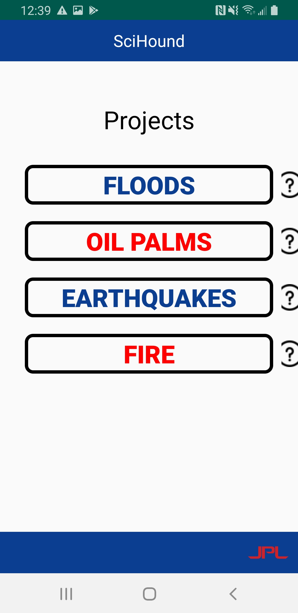
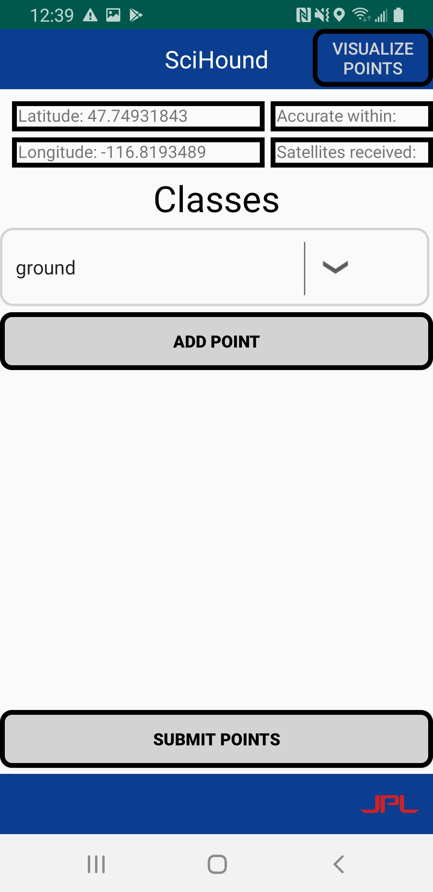
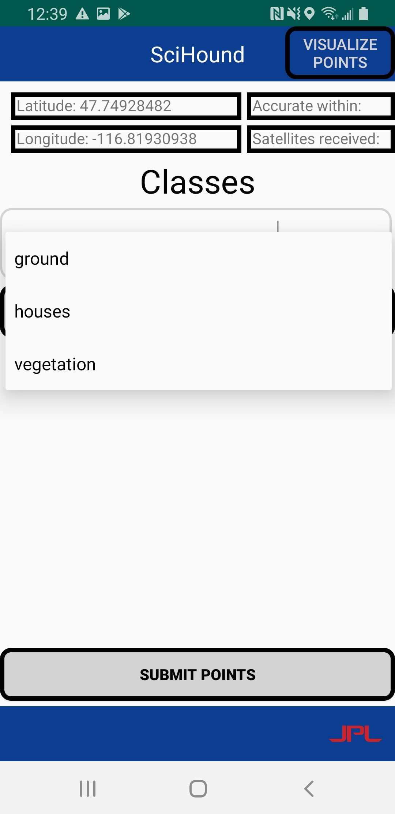
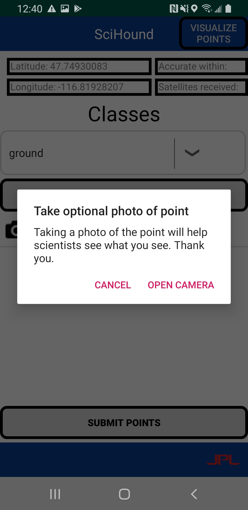
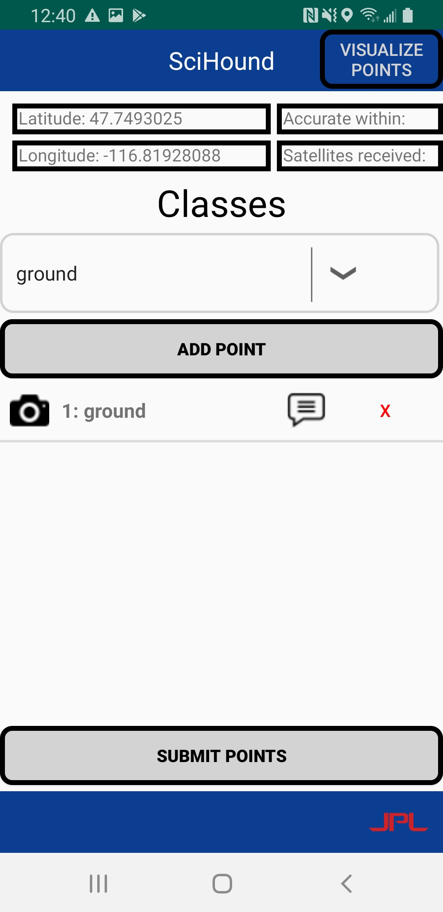
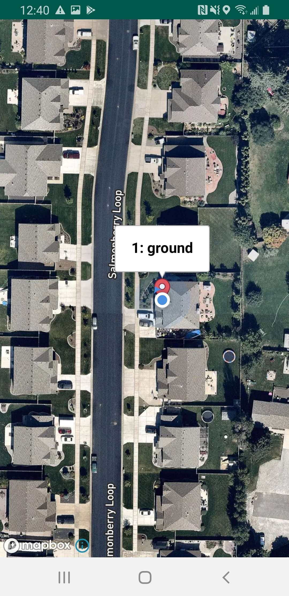

This is what the SciHound user interface looks like once a user opens the app for the first time. Underneath the "Credentials" heading, the text shows that the user is not currently signed in with an authenticated account.
2. Entering your credentials.
A user enters their email in the "Email" text box, and password in the "Verification Password" field. Credentials must be pre-approved by admin, as accounts cannot be created by individual users.
3. Authentication.
Once a user has entered credentials, the interface displays the current user signed in. A user will never be signed out unless they choose to by clicking the button within the lower screen.

4. Choosing a Project.
This is the interface that loads once a user has signed in and clicked the "Submit" button. From here, a user can choose the type of project to collect point data for.

5. Collecting the Data.
Once a user chooses a project, this is the interface that will be displayed. A user can see current longitude and latitude at the top of the screen, and can add a point using the "Add Point" button.

6. Classifying a Point.
Users can choose a specific class to classify a point as. In this example, we can see that a user can choose between ground, houses, and vegetation for their point data. This class can be changed between each point collected.

7. Taking a Photo of a Point.
Once a user clicks "Add Point", their location data and classification will be saved. The app will then prompt the user to take an optional photo of the point. If the user chooses "Cancel", they will not be able to take a photo at a later time.

8. Completing Data Collection.
This is what the interface displays after a user has finished collecting all of the data required for a single point. In this example, the point is classified as a "ground" point. A user can also add comments to individual points by clicking the text bubble associated with that point.

9. Viewing your Points.
A user can choose to view their points by clicking the "Visualize Points" button on the previous interface. The app will then bring up a satellite map that displays the users current location and red markers to indicate where points have been collected. A user can click on the markers to see point classifications, as shown here.
10. Clearing your Points.
After a user has collected points, they can then choose to submit their collected data to the server. After clicking the "Submit Points" button at the bottom of the screen, the app will then prompt the user to clear the current points thay have.